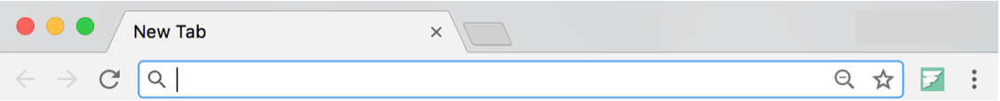

Factify integrations.
Factify provides both a Chrome extension and a Facebook plugin to integrate crowd-sourced fact verification directly with the platforms and tools you already use. An option to toggle the Factify button appears on the Chrome toolbar when you visit any Factify-supported news or media sites. Toggling the Factify button highlights the article in focus with verified Factify annotations, enabling you to discern fact and fiction. The Facebook plugin adds a Factify button to all shared news articles, linking directly to the Factify-ed article.
